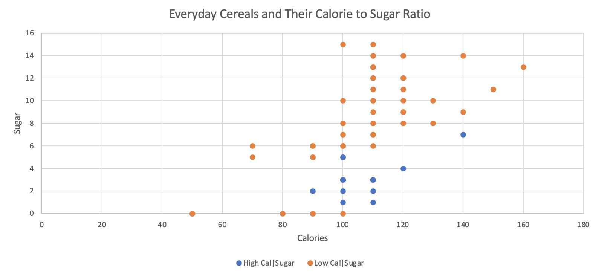

red v. blue (representing the party of each candidate)
this is good mapping because these colors are significantly different from each other and these colors are recognizable to the audience
Size (Area)
the area of each candidate of the total votes box for electoral votes needed
this is good mapping because it provides a spacial significance to how many more votes Clinton would have
Colormap(s)
Categorical
the colors chosen to represent each candidate are commonly used for their parties and easily distinguishable
Marks
Points(each batted ball is represented by a point on the graph)
Lines (there are horizontal lines representing each classification of the hit (pop-ups, fly balls, line drives, and ground balls))
Channels
Position (horizontal and vertical)
represents the launch angle and exit velocity of each batted ball
this is good mapping because viewers can determine the launch angle and exit velocity of each ball easily
Color
each ball is classified by color according the scale at the top-left of the visualization for its scoring value (purple-> white-> orange)
this is good mapping because it adds a level of depth to the information and visualizes the "sweet spot" of batted balls
Colormap(s)
Divergent
the classification of each ball (purple-> white-> orange) is a divergent color map due to white being the pivot point with purple representing below average and orange above average
one aspect of this colormap that we would change is to change the midpoint color to be slightly more diffentiable from the background (where there is no data)
Sequential
for the purple and orange sides of the midpoint, the darker the color the further from the midpoint

Marks
Points(each cereal brand is represented by a point on the graph)
Channels
Position (horizontal and vertical)
represents the calories and sugar content of each cereal
this is good mapping because viewers can determine the calories and sugar content of each cereal easily
Color
each cereal is classified by color according to the key at the bottom of the visualization for its calorie to sugar content ratio
this is good mapping because it adds a level of depth to the information and visualizes which cereals have low calories relative to their sugar content
Colormap(s)
Categorical
the colors chosen to represent a high or low calorie:sugar ratio easily distinguishable with orange representing low ratios and blue high ratios